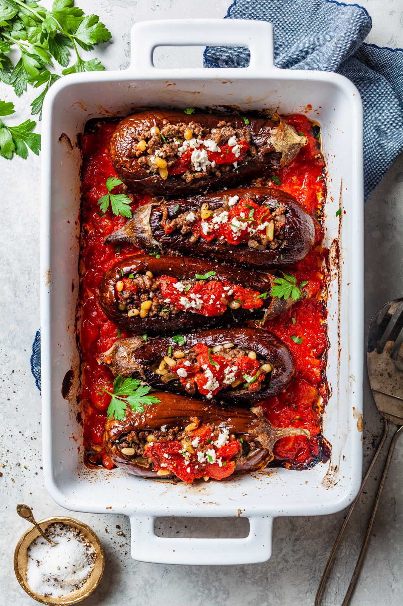

STUFFED AUBERGINES

Description
A great example of 'cucina povera' (kitchen of the poor), simple, yet flavoursome peasant-style Italian cooking at its best.
Ingredients
- 4 large aubergines
- Plenty of olive oil
- 125g buckwheat
- 2 tbsp extra-virgin olive oil
- 1-2 tbsp harissa
- 2 medium vine tomatoes
- A handful of chopped fresh flatleaf parsley
- 150g crumbled goat's cheese
Steps
- Preheat the oven to 200°C/fan180°C/gas 6. Halve the aubergines lengthways and place on a baking sheet. Drizzle with plenty of olive oil and season well. Roast for 20 minutes until tender.
- Meanwhile, cook the buckwheat according to pack instructions. Stir in the extra-virgin olive oil, the zest and juice of the lemon and harissa.
- Deseed and finely chop the tomatoes and stir into the buckwheat with the parsley and goat's cheese.
- Remove the aubergines from the oven and, once they've cooled a little, carefully scoop out the flesh and roughly chop. Stir into the buckwheat mixture and season well.
- Spoon the mixture back into the aubergine shells and return to the oven for 10-12 minutes. Serve with a green salad.